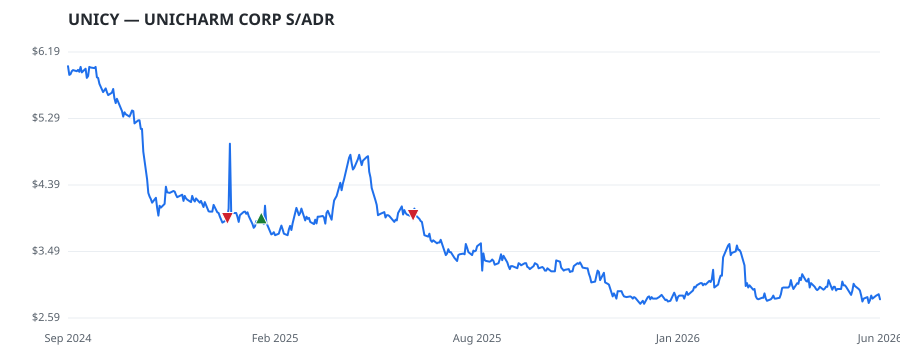

← Back to leaderboard
UNICY — UNICHARM CORP S/ADR
Other
· unknown cap
$2.78–$6.00
Available range
Members who bought UNICY earned a dollar-weighted
+1.5% from their disclosure
dates, versus -0.6% for the S&P 500 over the same holding
windows (+2.1% alpha).

▲ green = a disclosed purchase · ▼ red = a disclosed sale (plotted on disclosure date)
About
UNICHARM CORP S/ADR
Recent news
Diaper (Adult and Baby Diaper) Report 2025: A $131.73 Billion Market by 2029, Driven by Smart Diapers, Ingredient Transparency, R&D, Demand for Biodegradables, Emerging Economies
— GlobeNewswire Inc., 2026-02-05 Pet Grooming Products Market Size, Trends and Growth Forecast 2026-2032: Product Categories, Pet Types, End-User Segments, Distribution Channels, Regions, Technologies, Companies
— GlobeNewswire Inc., 2026-01-19 Baby Diapers Market Expected to Achieve USD 90.89 Billion In Revenues By 2033, Driven By a 5.30% CAGR
— GlobeNewswire Inc., 2024-09-05 [Latest] Global Feminine Hygiene Products Market Size/Share - GlobeNewswire
— GlobeNewswire Inc., 2024-07-10
🏛️ Members of Congress who traded UNICY
Member Chamber Out-performer
Disclosed buys $ Return on buys
Josh Gottheimer
house —
$8K
+1.5%
Disclosed $ figures are bracket midpoints — filings report ranges
(e.g. $1,001–$15,000), not exact amounts.
Trades: U.S. House Clerk & Senate eFD disclosures · Market data: Polygon.io ·
Returns assume buying at the close on/after each disclosure date, benchmarked vs SPY.
Educational use only — not investment advice.